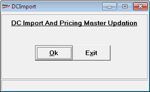

This option is used to create the pricing master from the transaction files.
How to reach: Stocks > Import DC/ Master from PT File
Generally, when the goods are sent from the distribution point to any of its chain store, a soft copy of the file called PT file (Purchase Transaction) will be sent. This file will contain master and dispatch information about the existing items as well as new items.
Goods Inwards using this option creates the pricing master for new items and updates the item master.
This option is used to create only the pricing master from the Transaction file available in the Shoper In folder, so that the goods inward can be done manually and the stocks uploaded.
The DCImport window is displayed as shown.
